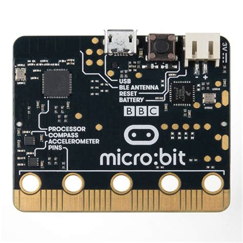
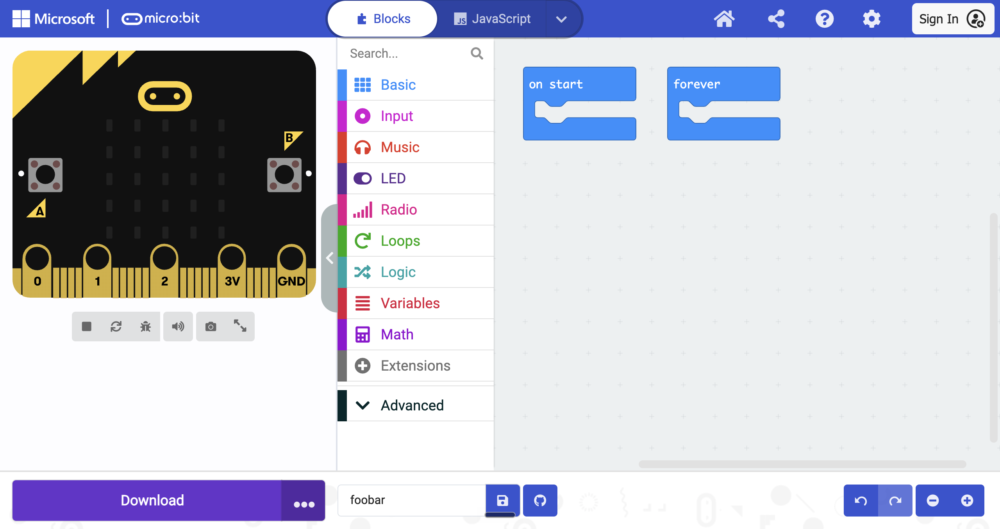
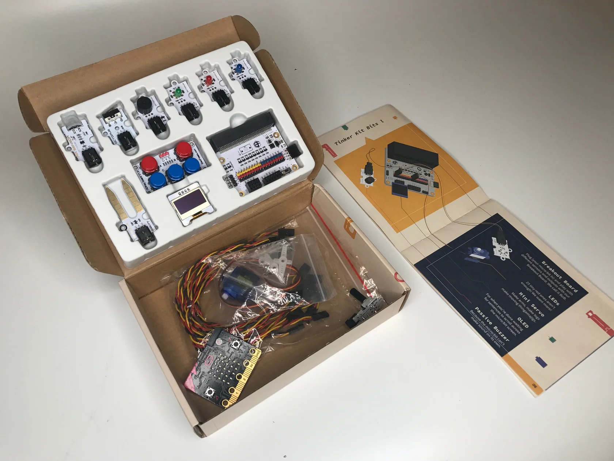
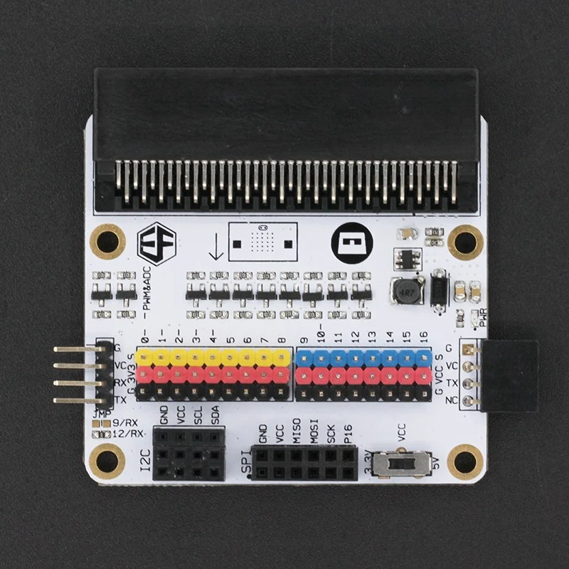

1. Hvad er en micro:bit?
En lillebitte computer
Den følger de instruktioner (kode), som du skriver.
Den kan mærke
Knaptryk, vip, rystelser, retning, temperatur og lys.
Den kan vise
Billeder, tal og ord på sine 25 små lys.
Den kan snakke
Den sender beskeder til andre micro:bits via radio.
2. Forsiden af pladen
- USB-port (på bagsiden, ved den øverste kant): sæt et kabel i her for at sende din kode til micro:bit'en og give den strøm.
- Knap A og B: tryk på dem for at få noget til at ske. Trykker du på A og B på samme tid, tæller det som en tredje knap!
- LED-gitter: 25 røde lys i 5 rækker med 5 i hver. Du bestemmer over hvert eneste lys.
- Guldpins: micro:bit'ens "fingerspidser". Her sætter du ledninger og krokodillenæb på.
3. LED-gitteret: find vej rundt
Hvert lys har en adresse, der består af to tal: x (hen ad) og y (ned ad). Vi skriver den som (x, y). Man begynder at tælle fra 0, ikke fra 1!
- x = hvor langt hen ad (venstre → højre)
- y = hvor langt ned ad (øverst → nederst)
- (0, 0) er lyset øverst til venstre.
- (4, 4) er lyset nederst til højre.
- (2, 2) er lyset i midten.
4. Bagsiden af pladen

- USB-port: sæt kablet i her for at overføre kode og give strøm.
- Reset-knap: starter dit program forfra.
- Batteristik: sæt en batteripakke i, så du kan klare dig uden ledning.
- Processor: hjernechippen, der følger din kode.
- Pin-ringe: de guldringe, du sætter klemmer på. Det er de samme pins som på forsiden.
Små sensorchips på bagsiden klarer to opgaver: kompasset ved, hvilken vej der er nord, og accelerometeret mærker, når den bliver vippet, rystet eller falder.
Der findes to udgaver af micro:bit'en. V1 har ingen højttaler og ingen mikrofon. Den nyere V2 har begge dele og desuden et guldlogo over lysene, som du kan røre ved. Kig efter den gyldne oval, så kan du se forskel på dem. Begge kan snakke via Bluetooth og radio. Blokke, der kun virker på en V2, er mærket Kun V2 i lektionerne. Summeren i dit kit kan lave lyd på begge udgaver.
5. Hvordan fortæller du den, hvad den skal gøre?
Du skriver et program og sender det så til micro:bit'en. Hjemmesiden makecode.microbit.org er gratis og kører i din browser. Der er ikke noget, du skal installere, og du behøver ikke logge ind (Sign In): start bare et Nyt projekt (New Project).
Blokke (Blocks) er den nemmeste måde at starte på: du klikker dem sammen, ligesom i Scratch. Du kan også skrive det samme program som tekst i Python eller JavaScript.

- Blocks / JavaScript (blokke / JavaScript): skift mellem måder at skrive din kode på (Python finder du i menuen).
- micro:bit'en på skærmen: test dit program her først.
- Bloktyper: vælg blokke fra de farverige grupper.
- Arbejdsområde: klik dine blokke sammen her.
- Download: send dit program over på den rigtige micro:bit.
- Gå ind på makecode.microbit.org, og start et nyt projekt.
- Byg dit program af blokke.
- Prøv det på micro:bit'en på skærmen.
- Forbind din micro:bit med USB-kablet, og download. Hvis programmet ikke kommer direkte over, så kopiér filen over på drevet, der hedder MICROBIT.
6. Hvad er der i dit kit?
Tinkercademy micro:bit Tinker Kit. Find hvert nummer på billedet, og læs så, hvad delen gør.

- micro:bit: Hjernen i det hele. Den kører din kode.
Du kan bruge den til at køre det program, du skriver. - Breakout-board: Giver micro:bit'ens pins nemme stik.
Du kan bruge det til at forbinde alle delene herunder. - PIR-sensor: Opdager, når noget varmt, som dig, bevæger sig tæt på.
Du kan bruge den til at lave en alarm, der opdager, når nogen går forbi. - Stødsensor: En kontakt, der mærker et stød eller et tryk.
Du kan bruge den til at stoppe en robot, når den kører ind i en væg. - Passiv summer: Spiller de toner og bip, du programmerer.
Du kan bruge den til at spille en melodi eller slå alarm. - Grøn LED-klods: Et klart lys, du kan tænde og slukke.
Du kan bruge den til at lave et signallys. - Rød LED-klods: Et klart lys, du kan tænde og slukke.
Du kan bruge den til at lave et advarselslys. - Blå LED-klods: Et klart lys, du kan tænde og slukke.
Du kan bruge den til at lave et statuslys. - ADKeypad: Et lille tastatur med knapper, der deler én enkelt pin.
Du kan bruge det til at bygge en spilcontroller. - Jordfugtsensor: Måler, hvor våd jorden er.
Du kan bruge den til at finde ud af, om en plante trænger til vand. - OLED-skærm: En lillebitte skærm til tekst og enkle billeder.
Du kan bruge den til at vise point eller beskeder. - Mini-servo: En motor, der drejer sin arm hen til en vinkel, du selv vælger.
Du kan bruge den til at bevæge et flag, en dør eller en robotarm. - Jumperledninger: Kabler med 3 ledninger, der forbinder delene med boardet.
Du kan bruge dem til at sætte hver del i breakout-boardet. - Potentiometer: En drejeknap. micro:bit'en kan aflæse, hvor langt du har drejet den.
Du kan bruge det til at lave en lysdæmper eller en fartknap.
Dit kit har også et USB-kabel og en batteripakke, men de er ikke med på billedet.
7. Breakout-boardet
micro:bit'ens guldstriber er bittesmå og svære at sætte klemmer på. Breakout-boardet løser det: micro:bit'en bliver sat ned i det, og de fleste pins får et nemt stik til dine dele. Det har kælenavnet BoB.

- Plads til micro:bit: skub micro:bit'en ned her.
- Stik til pin 0 til 8: til dine dele.
- Stik til pin 9 til 16: flere pladser til dine dele.
- Skærmstik: her skal OLED-skærmen sidde.
- Ekstra pins: til udvidelser, du måske prøver senere.
- Strømkontakt til pin 9 til 16: lad den stå på 3.3V, medmindre din lærer siger noget andet.
8. Lektioner
Del 1: Det grundlæggende
- Vis et ikon
- Vis ord og tal
- Reager på knapperne
- Pins: hvilken skal jeg bruge?
- Tænd en LED kommer snart
- Variabler kommer snart
Del 2: Vær kreativ
- Hvis og ellers kommer snart
- Flere sensorer kommer snart
- Lyd og bevægelse kommer snart
- Sprites kommer snart
Del 3: Projekter
- Musikmaskine kommer snart
- Smart lys kommer snart
- Slangespil kommer snart
9. Flere projekter at prøve
De her tutorials er lavet af Tinkercademy, der laver dit kit. De er på engelsk og bruger MakeCode-blokke. Nogle kræver ekstra dele eller en ekstra micro:bit.
- Create an Electro-Theremin: Drej på potentiometeret for at ændre tonen, som summeren spiller.
- Pitch Perfect: Hør en tone, og tryk på den tast, der passer. Bruger hvis/ellers.
- QUICK MATHS: Svar på regnestykker mod uret. Bruger variabler.
- Making a Waving Fortune Cat: Tryk på en knap for at tænde to LED'er og få en servoarm til at vinke.
- Maze Runner Micro:bit Game: Flyt en prik gennem en labyrint med ADKeypad. Et lille spil.
- Morse Code Transmitter: Send prikker og streger mellem to micro:bits. Kræver en ekstra micro:bit.
- Build your own Micro:bit Security Door: En kode på et tastatur åbner en servolås. Kræver ekstra dele, så det er en udfordring.
Lærernoter
- Kompas: første gang du bruger det, beder micro:bit'en dig om at vippe den, indtil alle lys er tændt (den viser rulleteksten TILT TO FILL SCREEN). Det er kalibrering, ikke en fejl.
- Temperatur: micro:bit'en måler temperaturen i sin egen chip, så tallet siger kun cirka, hvor varmt der er i rummet.
- Radio og Bluetooth: de kan ikke bruges i det samme program. MakeCode fjerner radioblokkene, hvis du tilføjer Bluetooth-udvidelsen.
- Delte pins: pin 3, 4, 6, 7 og 10 deles med LED-displayet (og pin 9 på en V1), og pin 5 og 11 med knap A og B. Undgå dem, mens lysene eller knapperne er i brug.
- Kontakten på breakout-boardet: den bestemmer spændingen på pin 9 til 16 (3.3V eller 5V). Lad den stå på 3.3V; micro:bit'ens egne pins kan kun tåle 3.3V.
- GND er ikke jording: micro:bit'ens GND er kun kredsløbets vej tilbage (returvej). Det er ikke beskyttelsesjorden i husets el-installation, som giver en fejlstrøm en sikker vej ned i jorden i stedet for gennem et menneske. micro:bit'ens 3V er for lav en spænding til at give stød.